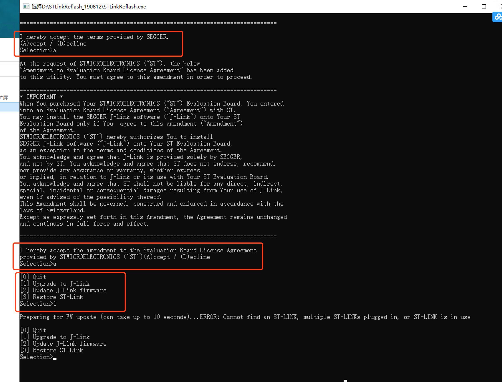
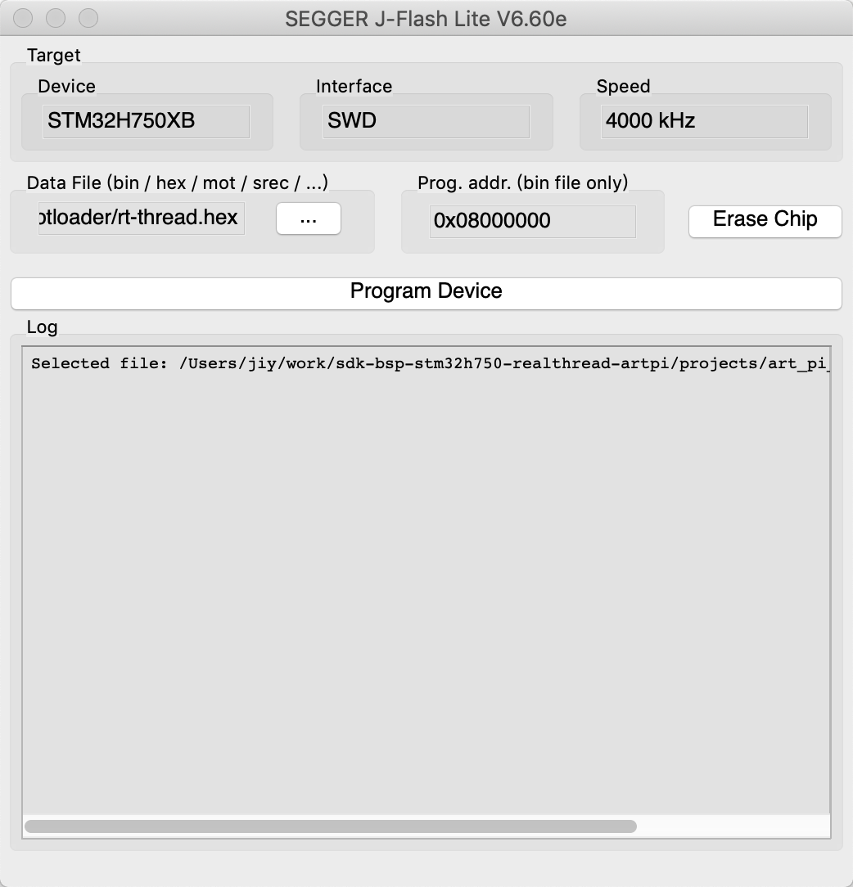
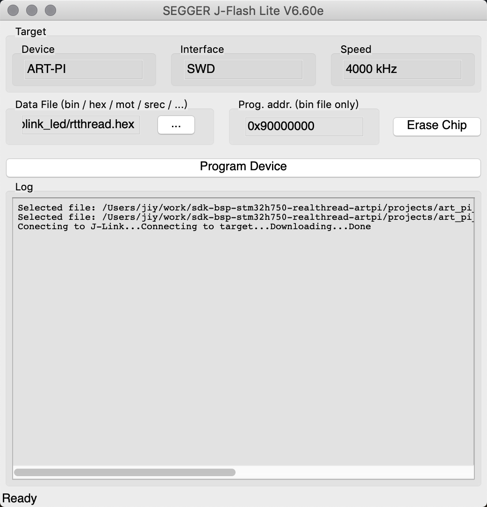

3. 在MacOS下编译烧录ART-Pi
3.1. 一、前言
ART-Pi是RT-Thread设计的一款搭载STM32H750XBH6 主控的开发板，由于STM32宣称 STM32H750XBH6 仅有128KB片内flash（实际上并不是），所以ART-Pi SDK使用128KB片内flash当作bootloader，将app程序放到8MB的片外QSPI flash上面运行。
ART-Pi SDK可以在RT-Thread Studio、MDK 等IDE上完美使用，但是这一切都是基于Windows。但是当我看到这篇文章的时候，我就知道ART-Pi 跨平台开发的机会来了。
3.2. 二、环境要求
装有MacOS的电脑或虚拟机
装有Windows的电脑或虚拟机
需要用到的资源如下：
3.3. 三、开搞
3.1 将板载ST-Link刷成J-Link
ART-Pi板载了一个ST-Link ，但是经过测试ST-Link 在非Windows系统上使用并不友好，所以需要将其重置为J-Link 以便烧录程序。
这一步需要在Windows上完成，因为ST-Link Reflash工具目前只有Windows版本。
具体操作步骤如下：
下载安装ST-Link Reflash。
连接
ART-Pi，启动STLinkReflash.exe。如下图所示，
输入a回车、输入a回车、输入1回车，第三步千万不要选择2.Update J-LINK firmware，否则无法通过USB刷回ST-Link。

正常情况下，板子上的ST-Link已经变成J-Link 了，我的ART-Pi已经刷过J-Link了所以提示找不到ST-LINK 。不要问为什么不刷回ST-Link 重刷截图，问就是懒。
3.2 编译下载Bootloader
接下来配置SDK和编译环境，进行Bootloader的编译和烧录。
使用
brew install scons，安装scons编译工具。下载SEGGER J-Link software，用于烧录调试。
使用
git clone https://github.com/RT-Thread-Studio/sdk-bsp-stm32h750-realthread-artpi克隆ART-Pi SDK到本地目录。下载解压Arm GUN 工具链。
（可选）克隆RT-Thread Env到本地目录，主要用于开发阶段pkgs管理等操作。
设置环境变量，建议添加到
.zshrc或.bashrcexport RTT_CC=gcc export RTT_EXEC_PATH=<ARM GUN工具链地址，包含bin目录>
使用命令行进入
ART-Pi SDK的projects/art_pi_bootloader目录，这里是ART-Pi的Bootloader项目，输入scons -c清除编译文件之后输入scons命令编译Bootloader。编译成功后使用<工具链路径>/arm-none-eabi-objcopy -O ihex rt-thread.elf rt-thread.hex得到hex文件。打开JFlashLite，选择驱动为
STM32H750XB，刚刚编译的hex文件烧录到0x08000000。

3.3 编译APP
使用命令行进入ART-Pi SDK的projects/art_pi_blink_led 目录，同样使用scons 编译项目，编译后使用同样的方法得到hex文件。这个目录是作为demo的点灯app，开发时可以替换成自己的项目。
值得一提的是app是烧录到片外flash的，所以ROM的起始地址是0x90000000 。并且app代码内需要加入调转到该地址的向量表（这里只是作为讲解，main.c中已有无需再添加），代码如下非常简单：
#include "stm32h7xx.h"
static int vtor_config(void)
{
/* Vector Table Relocation in Internal QSPI_FLASH */
SCB->VTOR = QSPI_BASE;
return 0;
}
INIT_BOARD_EXPORT(vtor_config);
3.4 新增J-Link Device
找到J-Link Software的主文件夹，参考方法如下：
➜ ~ which JLinkExe
/usr/local/bin/JLinkExe
➜ ~ ll /usr/local/bin/JLinkExe
lrwxr-xr-x 1 root wheel 41B Mar 7 2020 /usr/local/bin/JLinkExe -> /Applications/SEGGER/JLink_V660e/JLinkExe
➜ ~ cd /Applications/SEGGER/JLink_V660e
在
ART-Pi SDK中找到ART-Pi_W25Q64.FLM文件，复制到Jlink下的Devices/ST/STM32H7文件夹，并改名为ART-Pi_W25Q64.elf。
➜ cd Devices/ST/STM32H7
➜ mdfind ART-Pi_W25Q64.FLM
/Users/jiy/work/sdk-bsp-stm32h750-realthread-artpi/debug/flm/ART-Pi_W25Q64.FLM
/Users/jiy/work/sdk-bsp-stm32h750-realthread-artpi/libraries/touchgfx_lib/readme.md
➜ sudo cp /Users/jiy/work/sdk-bsp-stm32h750-realthread-artpi/debug/flm/ART-Pi_W25Q64.FLM ART-Pi_W25Q64.elf
➜ ll
total 2176
-rwxr-xr-x 1 root wheel 1.0M Feb 8 14:20 ART-Pi_W25Q64.elf
-rw-r--r-- 1 root wheel 36K Dec 16 2019 ST_STM32H745I_Disco_QSPI.elf
-rw-r--r-- 1 root wheel 36K Dec 16 2019 ST_STM32H753_Eval_QSPI.elf
-rw-r--r-- 1 root wheel 1.1K Dec 16 2019 ST_STM32H7xx.pex
找到
JLinkDevices.xml文件，备份，然后使用sudo权限编辑。
➜ mdfind JLinkDevices.xml
/Applications/SEGGER/JLink_V660e/JLinkDevices.xml
➜ cd /Applications/SEGGER/JLink_V660e
➜ sudo cp JLinkDevices.xml JLinkDevices.xml.bak
➜ sudo vim JLinkDevices.xml
然后加入
ART-Pi的Device。
<Device>
<ChipInfo Vendor="ST" Name="ART-PI" Core="JLINK_CORE_CORTEX_M7" WorkRAMAddr="0x20000000" WorkRAMSize="0x10000" JLinkScriptFile="Devices/ST/STM32H7/ST_STM32H7xx.pex"/>
<FlashBankInfo Name="QSPI Flash" BaseAddr="0x90000000" MaxSize="0x00800000" Loader="Devices/ST/STM32H7/ART-Pi_W25Q64.elf" LoaderType="FLASH_ALGO_TYPE_OPEN" />
</Device>
3.5 使用JFlashLite烧录程序
这时候关闭JFlashLite ，然后重新打开，在驱动里面找到刚刚添加的ART-Pi 。
烧录刚刚编译的app，然后重启ART-Pi。

发现板子上的灯闪了，最后把板子拔下来装到盒子里，放到一个不容易落灰的地方吧。